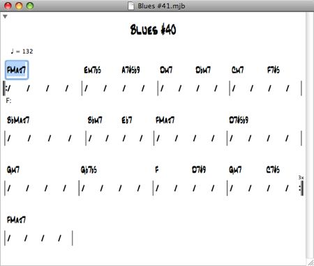

T2G — Jazz Harmonic Analysis and Accompaniment Generation Software
The release of T2G — my new jazz harmonic analysis and accompaniment generation software.
T2G is a computer program that performs harmonic analysis on jazz chord charts. It also generates rhythm section accompaniments with a walking bass line, and piano and drums comping. It is the culmination of research, experimentation, software design, and programming I've done in the past few years. No other program like it exists because the algorithms and techniques used in it are my original work. Specifically its algorithm for harmonic analysis of chord changes surpasses all those in the current computer music literature. Incorporation of chord and scale analyses also make accompaniments it generates sound more realistic than those produced by other automatic accompaniment software.
T2G integrates two programs I wrote, wrote about, and posted previously:
- T2, and
- MyJazzBand 2 Lite
T2G also contains a GUI chord chart editor (thus the ‘G’), which is a complete rewrite of and greatly improves on that of my “shareware experiment” MyJazzBand. It can still import chord charts from files in Band-in-a-Box and MyJazzBand 1.0 format. It now also supports drag-and-drop operations on bars, better utility of music fonts, display and editing of harmonic analyses, etc.
T2G is capable of the same roman numeral analysis performed by T2. See my article T2 - A Jazz Harmonic Analysis Program for a description, examples, and jazz theory references. See also the T2 Getting Started Guide for the chord types it recognizes and its algorithm’s limitations. Here’s an example of the use of T2G. Type or import into it the following chord chart (a variation on the Parker Blues changes).
Select Chart->Analyze. T2G will then display the result of the analysis:
The T2 algorithm deduces a segmentation for a chord chart and the key centers of these segments. It annotates the chord chart with roman numeral chords which show the chords’ functions with respect to the key centers. The analysis also shows dominant resolutions and ii-V relationships in the form of arrows and brackets, respectively. Dotted arrows and brackets denote substitute dominant resolutions and ii-V’s with substitute dominants, respectively. Extended dominants are represented by series of arrows. Parenthesized roman numeral chords denote deceptive resolution. These and other jazz theory terms and concepts are defined in these fine texts:
Barrie Nettles and Richard Graf. The Chord Scale Theory and Jazz Harmony. Advance Music. 1997.
Andrew Jaffe. Jazz Theory. Wm. C. Brown Company Publishers. 1983.
One reason for performing this harmonic analysis on a tune is of course to obtain a “harmonic road map” for improvisation. By the function of each chord with respect to a key center, one can determine what scales and modes to play, as nicely explained in the following text, for example:
Mark Levine. The Jazz Theory Book. Sher Music Co. 1995.
Notice that for the chord changes above T2G has determined that the key center for the entire tune is F major and displays that beneath the first bar. As an example of changing key centers, here’s an analysis of the chord changes of the tune Solar by T2G.

Notice that the key center changes from C minor to F major, then to E♭ major, and so on.
T2G’s chord chart editor uses a new version of the layout algorithm I developed for MyJazzBand to “flow” bars legibly and beautifully in a document window and on a printed page. Text completion and input validation make chord entry quick and accurate. Cut, copy, and paste commands are available to insert, delete, modify, and duplicate bars. Drag-and-drop support allows bars to be easily moved or copied within a chord chart or between chord charts. Unlimited undo and redo are provided for all operations so any mistakes can be reversed and canceled operations can be re-applied. For more information on the use of T2G’s chord chart editor and its other components, refer to the T2G — Getting Started Guide.
T2G contains the MyJazzBand 2 Lite code, which means it can generate jazz accompaniments from chord charts. It lacks MyJazzBand’s CoreMIDI integration; thus it can only output MIDI files but not play them interactively. Select Chart > Generate and Open to generate an accompaniment from the current chord chart and automatically open that in the application Mac OS X uses to open MIDI files (by default QuickTime). That application can then be used to play the accompaniment.
I’m distributing T2G under a license that permits free research, educational, and non-commercial use, but prohibits any redistribution. You’re of course welcome and encouraged to tell your friends, colleagues, students, and teachers about this page and my website and ask them to download it here. With that in mind, here are:
[** A NEWER VERSION OF T2G IS NOW AVAILABLE. **]
Mac OS X 10.4 or above is required. Questions can be sent to my Email address. Before doing so, please first read the T2G — Getting Started Guide and reference material listed there.
Category: Jazz, Programming, T2